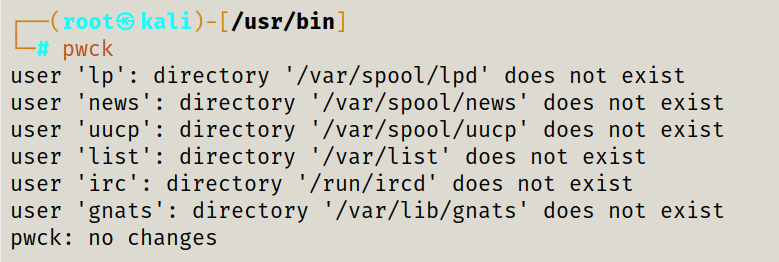

verify integrity of password files
By default, pwck operates on the files /etc/passwd and /etc/shadow. The user may select alternate files with the passwd and shadow
parameters.
-h, --help
Display help message and exit.
-q, --quiet
Report errors only. The warnings which do not require any action from the user won't be displayed.
-r, --read-only
Execute the pwck command in read-only mode.
-R, --root CHROOT_DIR
Apply changes in the CHROOT_DIR directory and use the configuration files from the CHROOT_DIR directory.
-s, --sort
Sort entries in /etc/passwd and /etc/shadow by UID.
